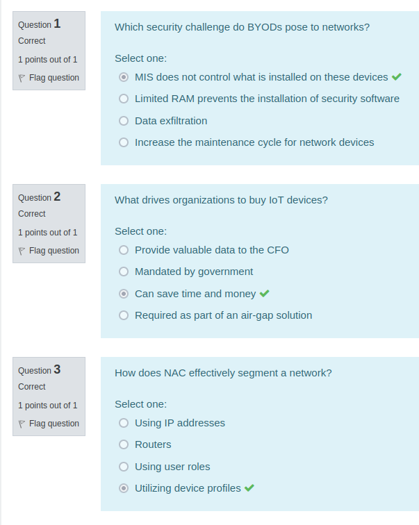
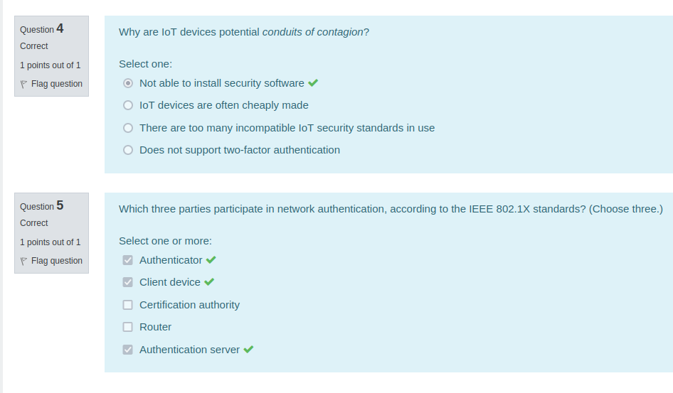

Network Access Control
2022/08/05 - 08:26:40 AM - Friday
Network Access Control (NAC)
NAC is an appliance or virtual machine that controls device access to the network. It began as a network authentication and authorization method for devices joining the network, which follows the IEEE 802.1X standards.
The authentication method involves 3 parties:
1. The client device
2. The authenticator
3. The authentication server
NVR = Network Video Recorder
NAC grants access to devices for specific services based on the device profiles. For example: an IP camera will be given access to a NVR server, but will not be given access to a finance server.
Fortinet NAC product is FortiNAC.

